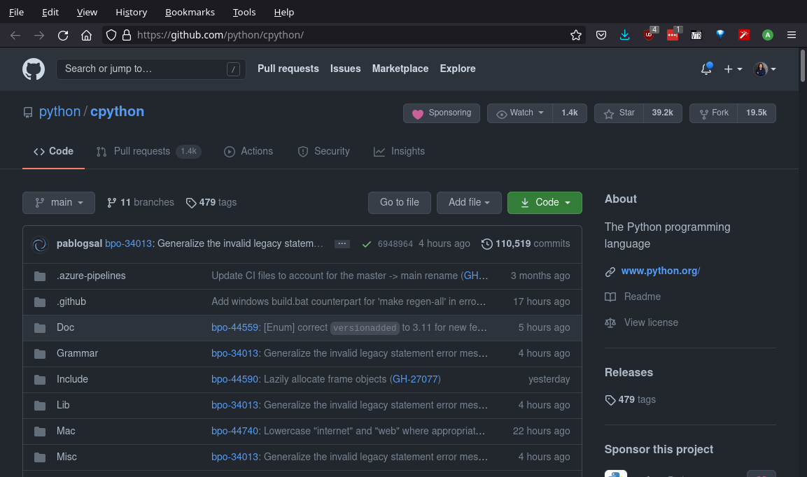
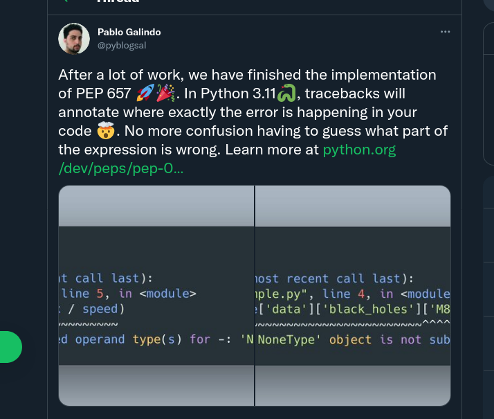
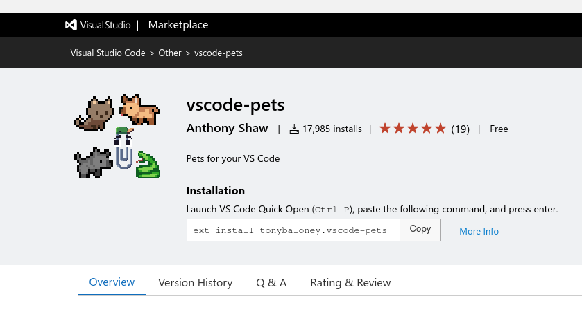

Learn CPython
by b̷̘̓r̶̲̈́ë̸͎́a̶̧̓k̵̯̈́ĭ̵̜ń̴̰g̴͈̿ it
by b̷̘̓r̶̲̈́ë̸͎́a̶̧̓k̵̯̈́ĭ̵̜ń̴̰g̴͈̿ it
Dr. Cristián Maureira-Fredes
Writing code at 
@cmaureir


Learning something new
can be scary 👻
🔨 + 🚗
Before getting our hands dirty
let's check a few things 📝
CPython?
do you mean Python? 🤔
Python Implementations


- MicroPython
- RustPython
- Jython
- PyPy
- Pyston
- Stackless Python
- IronPython
- Pyjion
- CPython 🎉
The CPython code
CPython structure (1/2)
Doc/ Misc/ Parser/ LICENSE config.sub* pyconfig.h.in
Grammar/ Modules/ Programs/ Makefile.pre.in configure* setup.py
Include/ Objects/ Python/ README.rst configure.ac
Lib/ PC/ Tools/ aclocal.m4 install-sh*
Mac/ PCbuild/ CODE_OF_CONDUCT.md config.guess* netlify.toml
CPython structure (2/2)
- Doc - Official documentation
- Include - Interpreter header files
- Grammar - PEG grammar (PEP 617)
- Lib - stdlib in pure Python
- Modules - stdlib in C
- Objects - built-in types
- Python - CPython runtime
Building your own Python
- Clone the repo
git clone https://github.com/python/cpython.git - Configure
# you can select a build and install directory cd cpython/ ./configure - Compile, and enjoy!
# For 'X' processes make -j X ./python Python 3.11.0a0 (Jul 27 2021, 22:56:41) [GCC 11.1.0] on linux Type "help", "copyright", "credits" or "license" for more information. >>> print("yay!") yay!
A /super brief/ introduction to C
😨
Python and C
# This is a comment
import my_module
def add(a, b):
return a + b
def main():
msg = "hello world"
x = 3
y = 0.14
z = add(x, y)
print("%f" % z)
if __name__ == "__main__":
main()
// This is a comment
#include <my_module.h>
float add(int a, float b) {
return a + b;
}
int main(){
char msg[] = "hello world";
int x = 3;
float y = 0.14;
float z = add(x, y);
printf("%f", z)
return 0;
}
Python and C (+type annotations)
# This is a comment
import my_module
def add(a: int, b: float) -> float:
return a + b
def main() -> None:
msg: str = "hello world"
x: int = 3
y: float = 0.14
z: float = add(x, y)
print("%f" % z)
if __name__ == "__main__":
main()
// This is a comment
#include <my_module.h>
float add(int a, float b) {
return a + b;
}
int main(){
char msg[] = "hello world";
int x = 3;
float y = 0.14;
float z = add(x, y);
printf("%f", z)
return 0;
}
Python can also look complicated 🥲
_="_=%r;print(_%%_)";print(_%_)
# For a given number 'n'
n&~-n<1
But more importantly...
Congratulations, you learned C 🥳
(well...a little bit)
Don't be afraid!
It's not so difficult to start breaking things ⭐

...and Python is a normal project, just like ours.
WARNING
We are going to dive into CPython code.Where and what to break?
Let's use the power of gdb!
(think of it as a magical crystal ball 🔮 to see through code)
That doesn't look too obvious 😑
The useful dis module
from dis import dis
def add(a, b):
return a + b
dis(add)
2 0 LOAD_FAST 0 (a)
2 LOAD_FAST 1 (b)
4 BINARY_ADD
6 RETURN_VALUE
BINARY_ADD 🤔?
PyObject
typedef struct _object {
_PyObject_HEAD_EXTRA
Py_ssize_t ob_refcnt;
struct _typeobject *ob_type; // ?
} PyObject;
typedef struct _typeobject {
PyObject_VAR_HEAD
const char *tp_name; /* For printing, in format "." */
Py_ssize_t tp_basicsize, tp_itemsize; /* For allocation */
/* Methods to implement standard operations */
destructor tp_dealloc;
Py_ssize_t tp_vectorcall_offset;
getattrfunc tp_getattr;
setattrfunc tp_setattr;
PyAsyncMethods *tp_as_async; /* formerly known as tp_compare (Python 2)
or tp_reserved (Python 3) */
reprfunc tp_repr;
/* Method suites for standard classes */
PyNumberMethods *tp_as_number;
PySequenceMethods *tp_as_sequence;
PyMappingMethods *tp_as_mapping;
/* More standard operations (here for binary compatibility) */
hashfunc tp_hash;
ternaryfunc tp_call;
reprfunc tp_str;
getattrofunc tp_getattro;
setattrofunc tp_setattro;
/* Functions to access object as input/output buffer */
PyBufferProcs *tp_as_buffer;
/* Flags to define presence of optional/expanded features */
unsigned long tp_flags;
const char *tp_doc; /* Documentation string */
/* Assigned meaning in release 2.0 */
/* call function for all accessible objects */
traverseproc tp_traverse;
/* delete references to contained objects */
inquiry tp_clear;
/* Assigned meaning in release 2.1 */
/* rich comparisons */
richcmpfunc tp_richcompare;
/* weak reference enabler */
Py_ssize_t tp_weaklistoffset;
/* Iterators */
getiterfunc tp_iter;
iternextfunc tp_iternext;
/* Attribute descriptor and subclassing stuff */
struct PyMethodDef *tp_methods;
struct PyMemberDef *tp_members;
struct PyGetSetDef *tp_getset;
struct _typeobject *tp_base;
PyObject *tp_dict;
descrgetfunc tp_descr_get;
descrsetfunc tp_descr_set;
Py_ssize_t tp_dictoffset;
initproc tp_init;
allocfunc tp_alloc;
newfunc tp_new;
freefunc tp_free; /* Low-level free-memory routine */
inquiry tp_is_gc; /* For PyObject_IS_GC */
PyObject *tp_bases;
PyObject *tp_mro; /* method resolution order */
PyObject *tp_cache;
PyObject *tp_subclasses;
PyObject *tp_weaklist;
destructor tp_del;
/* Type attribute cache version tag. Added in version 2.6 */
unsigned int tp_version_tag;
destructor tp_finalize;
vectorcallfunc tp_vectorcall;
/* bpo-37250: kept for backwards compatibility in CPython 3.8 only */
Py_DEPRECATED(3.8) int (*tp_print)(PyObject *, FILE *, int);
#ifdef COUNT_ALLOCS
/* these must be last and never explicitly initialized */
Py_ssize_t tp_allocs;
Py_ssize_t tp_frees;
Py_ssize_t tp_maxalloc;
struct _typeobject *tp_prev;
struct _typeobject *tp_next;
#endif
} PyTypeObject;
/* The *real* layout of a type object when allocated on the heap */
typedef struct _heaptypeobject {
/* Note: there's a dependency on the order of these members
in slotptr() in typeobject.c . */
PyTypeObject ht_type;
PyAsyncMethods as_async;
PyNumberMethods as_number;
PyMappingMethods as_mapping;
PySequenceMethods as_sequence; /* as_sequence comes after as_mapping,
so that the mapping wins when both
the mapping and the sequence define
a given operator (e.g. __getitem__).
see add_operators() in typeobject.c . */
PyBufferProcs as_buffer;
PyObject *ht_name, *ht_slots, *ht_qualname;
struct _dictkeysobject *ht_cached_keys;
/* here are optional user slots, followed by the members. */
} PyHeapTypeObject;
You don't need to learn them all
- If you want
int-like type, you implement those. - If you want
list-like type you implement those. - If you want
str-like type you implement those. - ...
Think about PyObject as a big box 📦, that you can fill according to your needs
Let's look something different
Issues with sets
Three list methods you didn't know
Number three will surprise you
Improvements in future releases
things you didn't know 👀
What if?


Did you know
Python is conference-ready?
There are many other details 😵
- Reference counting 🧮
- Global Interpreter Lock (GIL) 🔒
- Module and Type creation 🤖
but don't worry
go slowly, and embrace CPython
Learn CPython
by b̷̘̓r̶̲̈́ë̸͎́a̶̧̓k̵̯̈́ĭ̵̜ń̴̰g̴͈̿ it
by b̷̘̓r̶̲̈́ë̸͎́a̶̧̓k̵̯̈́ĭ̵̜ń̴̰g̴͈̿ it
Dr. Cristián Maureira-Fredes
@cmaureir